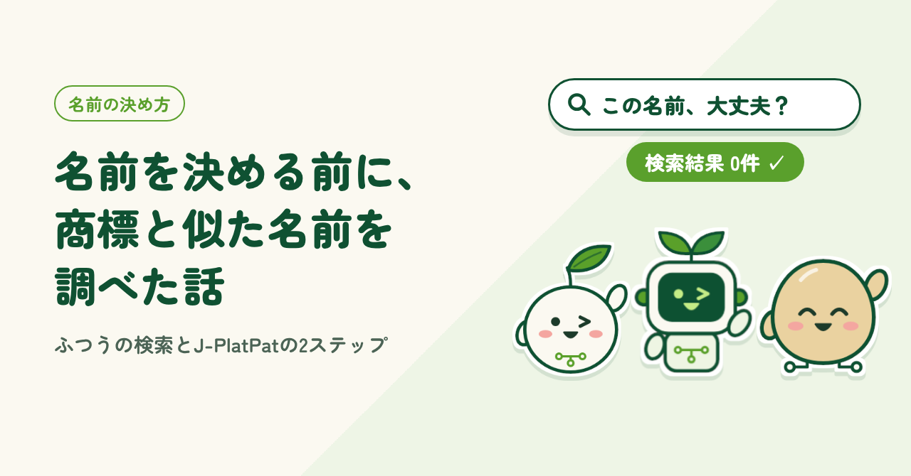
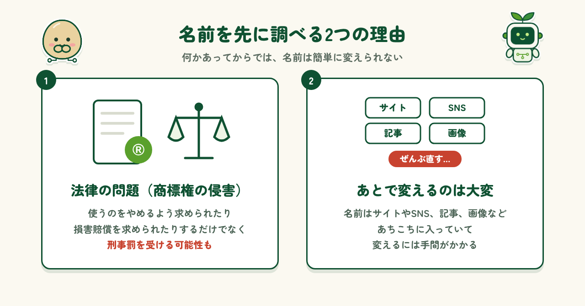
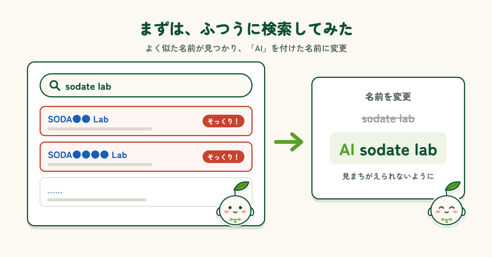
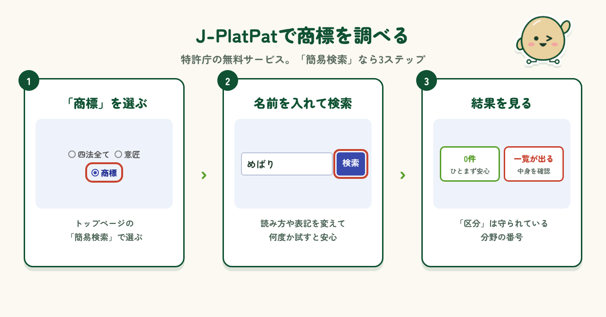
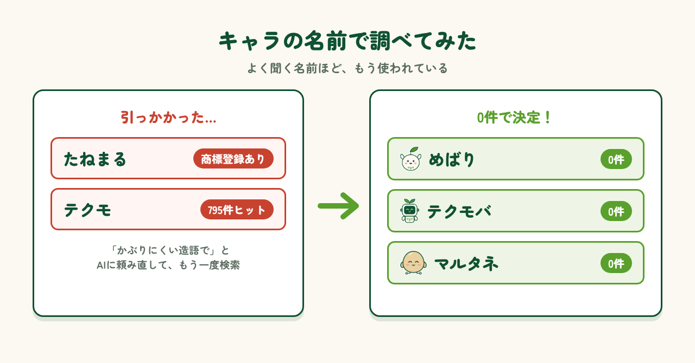

2026.10.28 公開
名前を決める前に、商標と似た名前を調べた話
名前を決める前にやった2つの調べ方（ふつうに検索する／J-PlatPatで商標を調べる）を、つまずいた所も含めて紹介します。

はじめに
何かを始めるとき、意外と悩むのが名前です。私もこれまで、活動の名前やキャラクターの名前を、AIと一緒にいくつも考えてきました。ところが、気に入った名前ができても、しばらくすると「なんかこの名前、どこかで使われてるのでは？」と感じて、心配になることがありました。あとから同じ名前の会社やサービスが見つかったら大変です。そこでこの記事では、名前を決める前に私が実際にやった調べ方を、つまずいた所も含めて紹介します。
なぜ名前を調べるのか
なぜ、わざわざ名前を調べるのでしょうか。理由は大きく2つあります。1つ目は、法律の問題です。ほかの人や会社が商標として登録している名前を、似た分野の商品やサービスに使うと、商標権の侵害になるおそれがあります。使うのをやめるよう求められたり、損害賠償を求められたりするだけでなく、刑事罰を受ける可能性もあります（※）。2つ目は、あとから名前を変えるのが大変なことです。名前はサイトやSNS、記事、画像など、あちこちに入っています。何かあってからでは簡単に変えられないし、困ると思い、最初に調べることにしました。
※ 商標法第36条（使用の差止め）、民法第709条（損害賠償）、商標法第78条（商標権の侵害：10年以下の拘禁刑または1,000万円以下の罰金、併科あり）、第78条の2（似た名前などによる侵害：5年以下の拘禁刑または500万円以下の罰金）。一般的な情報の整理で、専門家の判断ではありません。

調べ方① ふつうに検索する
最初に試したのは、名前をそのままインターネットで検索することです。当初は「sodate lab」という名前にするつもりでしたが、調べてみると、アルファベットが1〜2文字違うだけの、とてもよく似た名前がいくつか見つかりました。「これ、大丈夫？」と思い、心配になりました。まったく同じ名前ではなくても、読む人が見まちがえるかもしれません。そこで、頭に「AI」を付けた「AI sodate lab」に変えることにしました。検索なら数分でできるので、まずは手軽な第一歩としておすすめです。

調べ方② J-PlatPatで商標を検索する
次に使ったのが、特許庁が無料で公開している「J-PlatPat（ジェイプラットパット）」です。名前が商標として登録されているかを、だれでも調べられます。こういうやり方があるんだ、と初めて知りました。使い方はかんたんで、トップページの「簡易検索」で「商標」を選び、名前を入れて検索するだけ。登録がなければ「0件」と表示され、あれば一覧が出ます。一覧の「区分」は、その名前が守られている分野を表す番号です。読み方や表記を変えて何度か試すと、より安心です。

実例：キャラの名前で調べてみた
実際に、キャラクターの名前をJ-PlatPatで調べてみると、結構引っかかります。AIが出してくれた候補のうち、「たねまる」は横浜市がすでに商標登録していて、「テクモ」は795件もの結果が出てきました。よく聞く名前ほど、だれかがすでに使っていることが多いようです。そこで、AIに「かぶりにくい造語で」と頼み直し、出てきた候補をもう一度調べました。その結果、「めばり」「テクモバ」「マルタネ」はどれも0件。ようやく安心して名前を決められました。

まとめ
名前を決める前の調べものは、正直に言うと少し大変です。それでも、あとから名前を変える手間や、知らないうちに誰かの権利を侵してしまう心配を考えると、とても重要な作業だと感じました。名前の候補をたくさん出すのは、AIの得意分野です。いっぽうで、その名前が本当に使えるかを確かめるのは、人の役目。まずはふつうに検索し、次にJ-PlatPatで商標を調べる。この2つだけでも、ぐっと安心できます。大変だけど重要、これから名前を付ける人は、ぜひやってみてください。迷ったときは、弁理士などの専門家に相談するのがおすすめです。
制作メモ
段落の構成と文章の下書きはAI（Claude）と作り、各段落に自分の感想を入れて、1段落ずつ確認・修正しました。